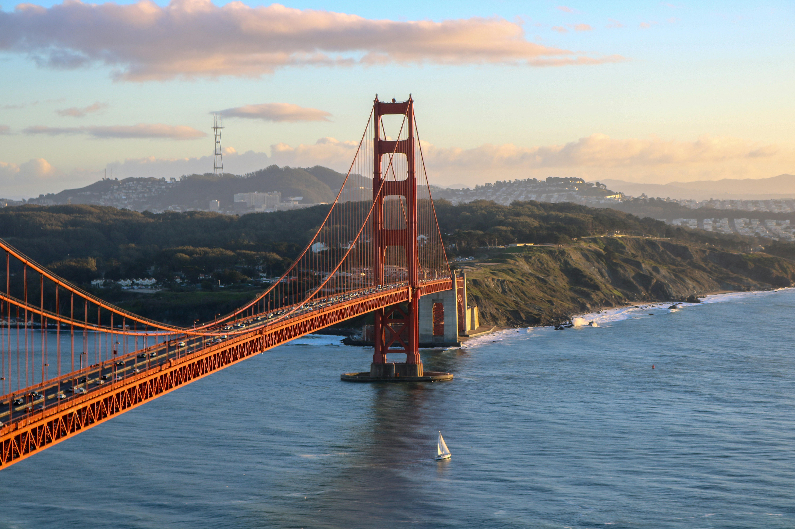
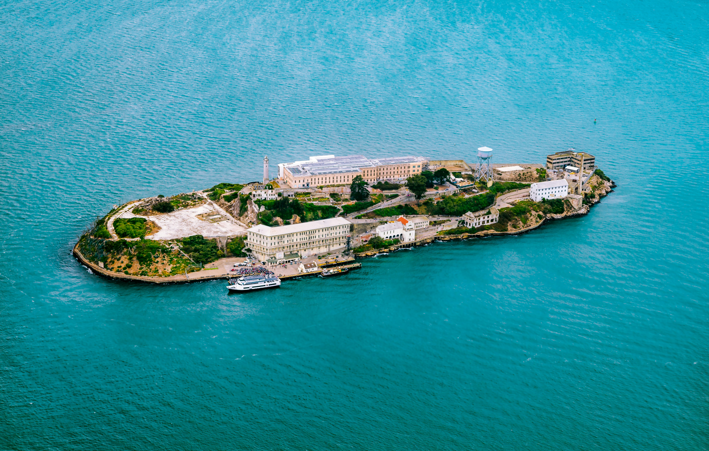
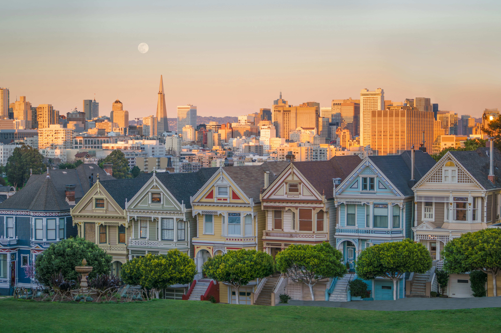

visit San Francisco and enjoy the trip

Cycling across the Golden Gate Bridge is one of San Francisco's most exhilarating experiences, offering unobstructed views of the bay, Alcatraz Island, and the city skyline from the middle of the iconic 1.7-mile span. Rent a bike from Fisherman's Wharf and ride through the waterfront, past Fort Mason and Crissy Field beach, where locals kiteboard and picnic with bridge views. The ride up to the bridge entrance provides glimpses of the Presidio's historic military buildings now converted to museums and restaurants.
Once on the bridge, stop at the Vista Point overlook on the Marin side for spectacular photos without city crowds. Continue riding to the charming waterfront town of Sausalito, where Mediterranean-style buildings cascade down hillsides to the harbor filled with sailboats and houseboats. Enjoy lunch at waterside restaurants before taking the ferry back to San Francisco for a scenic bay cruise. Alternatively, bike further to Tiburon or explore Marin Headlands' dramatic coastal cliffs. The best time is mid-morning after fog lifts but before afternoon winds pick up, and always bring layers as temperatures change dramatically across the bridge.

Alcatraz Island, known as "The Rock," housed America's most notorious criminals from 1934 to 1963, including Al Capone, Machine Gun Kelly, and the Birdman of Alcatraz. The ferry ride from Pier 33 offers stunning views of San Francisco's skyline and the Golden Gate Bridge. The award-winning audio tour, narrated by former correctional officers and inmates, brings the prison's haunting history to life as you walk through cell blocks, the dining hall, and solitary confinement.
Stories of famous escape attempts, including the mysterious 1962 escape depicted in the movie "Escape from Alcatraz," add intrigue to the experience. Beyond the prison, the island offers beautiful gardens, tide pools, and bird watching opportunities, as it's now a nesting area for seabirds. Night tours provide an eerie, atmospheric experience with fewer crowds and stunning sunset views. Book tickets weeks or months in advance as tours sell out quickly, especially during summer. The round-trip ferry and tour take about 2.5 hours, allowing time to explore both the prison and the island's natural beauty while learning about Native American occupation history and military fortress days.

San Francisco's cable cars are the world's last manually operated cable car system and a moving National Historic Landmark. These charming wooden vehicles have been climbing the city's steep hills since 1873, offering a nostalgic way to experience San Francisco's unique topography. The Powell-Hyde line is most popular, running from Union Square over Nob Hill and Russian Hill, passing Lombard Street's famous hairpin turns, and ending at Fisherman's Wharf with breathtaking bay views.
Riding the outside running boards as the cable car climbs impossibly steep streets provides thrills and perfect photo opportunities of Victorian homes, steep descents, and harbor vistas. The Cable Car Museum at the Washington-Mason power house shows the massive wheels and cables that pull the cars through underground channels across the city. Visit early morning or late evening to avoid long queues, or walk to less crowded stops away from terminals. The ding-ding of the bell, the gripman manually controlling the cable, and the clack-clack over intersections create an authentic San Francisco experience unchanged for over a century, connecting downtown shopping districts with waterfront attractions.